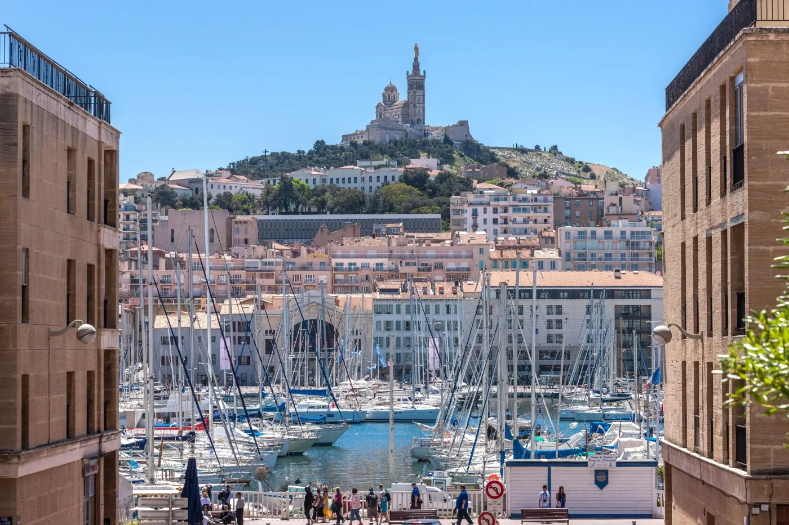
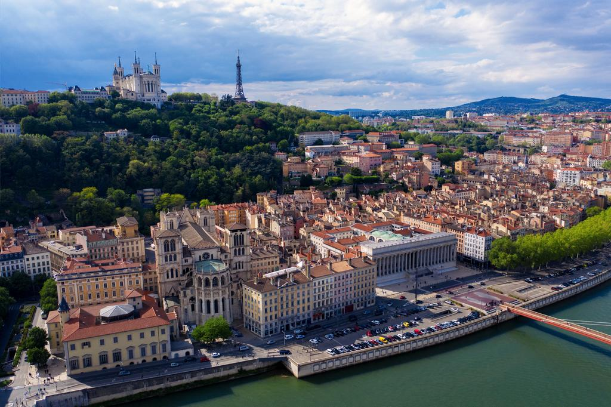
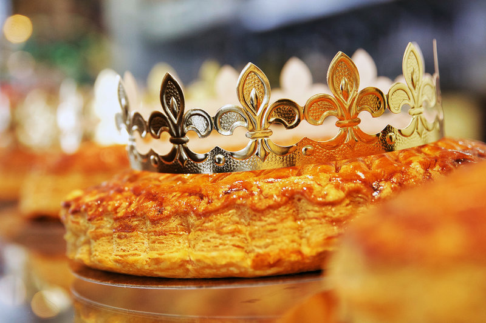
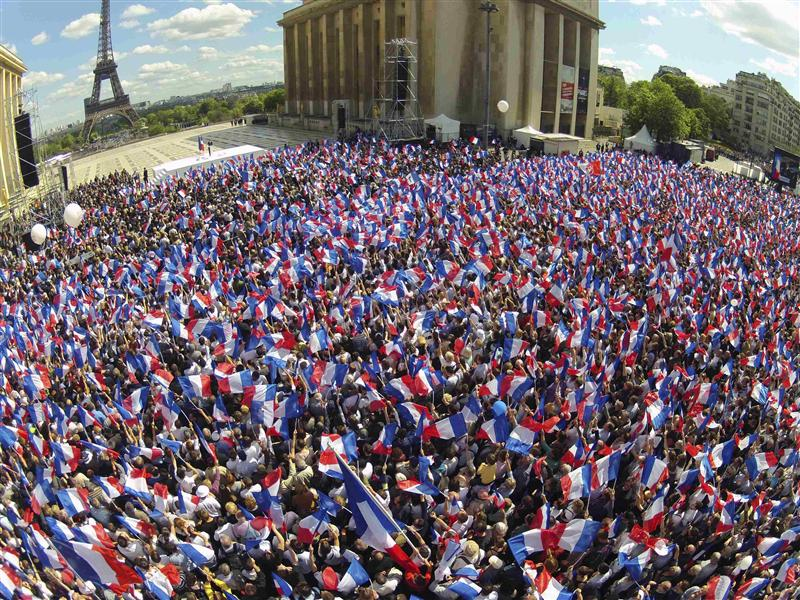
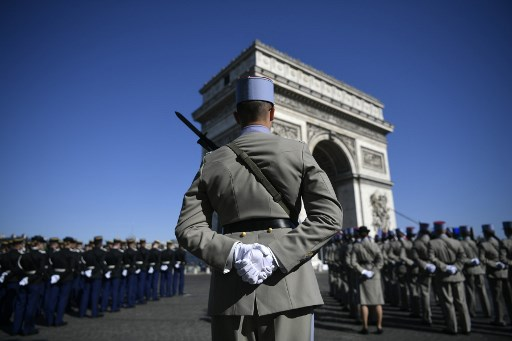

Cities to visit
----- Paris -----

Top attractions :
- Musée d'Orsay, Cathédrale Notre-Dame de Paris, Sainte-Chapelle, Palais Garnier, Eiffel Tower
Paris is the capital and most populous city of France, with a population of 2,148,271 residents (official estimate, 1 January 2020) in an area of 105 square kilometres (41 square miles). Since the 17th century, Paris has been one of Europe's major centres of finance, diplomacy, commerce, fashion, science and arts.
----- Marseille -----
Top attractions :
- Basilique Notre Dame de la Garde, Parc National des Calanques, Château d'If, Mucem, Le Vieux Port
Marseille is the prefecture of the department of Bouches-du-Rhône and region of Provence-Alpes-Côte d'Azur. It is located on the Mediterranean coast near the mouth of the Rhône. The city covers an area of 241 km2 (93 sq mi) and had a population of 870,018 in 2016. Its metropolitan area, which extends over 3,173 km2 (1,225 sq mi) is the third-largest in France after those of Paris and Lyon, with a population of 1,831,500 as of 2010
----- Lyon -----
Top attractions :
- Vieux Lyon, Traboules, Fourvière Basilica, Parc de la Tête d'Or, Presqu'île,
Musée des Beaux-Arts de Lyon, Ancient Theatre of Fourvière, Gallo-Roman Museum of Lyon-Fourvière.
Lyon or Lyons is the third-largest city and second-largest urban area of France. It is located in the country's east-central part at the confluence of the rivers Rhône and Saône, about 470 km (292 mi) south of Paris, 320 km (199 mi) north of Marseille and 56 km (35 mi) northeast of Saint-Étienne. Inhabitants of the city are called Lyonnais.
French History
- 3/8/1914 World War I: Germany declared war on France.
- 1/9/1939 Second World War: France declared war on Germany.
- 12/7/1998 France won the 1998 World Cup of football on home soil. This was their first FIFA World Cup title
- 31/12/1998 Introduction of the euro: the exchange rates between the euro and legacy currencies (the franc for France) in the eurozone became fixed.
- 19/5/2011 France leads the NATO intervention in Libya to overthrow Muammar Gaddafi. The Libyan leader is eventually killed on 20 October 2011.
- 18/5/2013 Same-sex marriage becomes legal in France, the thirteenth country worldwide to allow it.
- 10-11/1/2015 Some 3.7 million people demonstrate nationwide against terrorism and for freedom of speech following the terrorist attack at Charlie Hebdo.
These key events took part between 1914 - 2015
Holidays in France
Epiphany (Epiphanie)
Labor Day (Fête de la Victoire)
VE Day
Web Page information
Within the footer I have included 2 other pages I have created. Below is the CSS images page and the sitemap. If you'd like to view the page editor webpage you can access it from within the "View Images" page. If you'd like to return to the top however click here